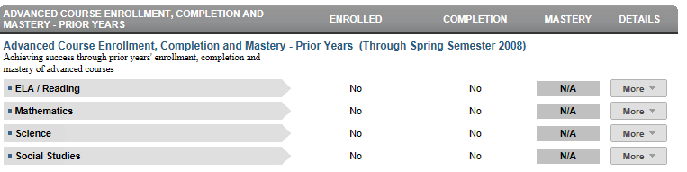
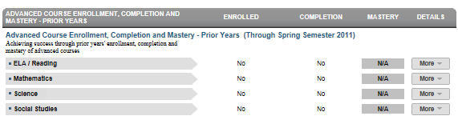

Dashboard Metrics


Advanced Course Enrollment, Completion and Mastery - Prior Years
Background
Student Dashboard Metrics
Because of the importance of rigorous coursework to postsecondary success, several districts across the country, including Charlotte, Chicago, Dallas and Oakland, have incorporated into their internal performance management dashboards metrics to monitor advanced course enrollment and performance. In focus group discussions conducted with educators, 95% of those surveyed found advanced course enrollment and performance information useful when reported at the campus level. When reported at the student level, the percent of respondents finding the information useful was notably lower (less than 90%). The implication is that this metric, though still valuable to teachers in preparing their individual students for advanced coursework, may be even more useful to principals and counselors in developing strategic, school-wide approaches to increasing enrollment and success in advanced courses.
Primary Metric
- Advanced Course Enrollment, Completion and Mastery–Prior Years: for the previous years, the number of AP, IB or dual enrollment (DE) courses the student has been enrolled in, completed and mastered (with exam score at or above specified criterion) in the four core subject areas.
Related Metric
- Advanced Course Potential–Current Year: for current year only, whether or not a student has demonstrated potential for advanced coursework based on past state assessments (state assessment commended score at or above 2400) and PSAT (if taken, performance at greater than or equal to 80th percentile) and whether or not they are enrolled in advanced courses (AP, IB or DE courses) in the four core subject areas.
User Interface
Dashboard Example
Figure 1 shows the Advanced Course Enrollment, Completion and Mastery metric as seen on the student dashboard.

Figure 1 Ed-Fi Advanced Course Enrollment, Completion and Mastery Metric
Status Definition
Advanced courses are defined as AP, IB, or other advanced courses or courses that are identified as dual credits. At the middle school level, PreAP and PreIB courses should also be considered advanced.
The Enrolled value is determined by whether or not a student enrolled in one or more advanced courses for ELA, mathematics, science, and social studies during prior years.
The Completion value is determined by whether or not a student passed or failed the advanced course. The default threshold set in the Ed-Fi dashboards for failing is less than 70% or a D or F.
The Mastery value is determined by whether or not a student met the state criterion for either the AP or IB tests. The following thresholds are applicable for each of the core subject areas (ELA, Mathematics, Science and Social Studies):
- Met = most recent exam score is a 3 or above for AP exam; or subject exam score is 4 or above on the IB exam.
- Not Met = most recent exam score is <3 for AP exam; exam score <4 for IB subject exam.
- If the student took more than one exam (> 1 IB exam, >1 AP exam, or combination across the two types), in a subject area, they must meet the state criterion on all taken to be coded as Met.
Trends
There is no trend for this metric.
Periodicity
Recommended Load Characteristics | |
| Calendar | Beginning of school year and mid-year |
| Frequency of data load | Semester, Yearly |
| Latency | 3-4 months |
| Interchange schema | Interchange-StudentGrade.xsd |
Tooltips
The standard tooltips for the metric definition, column headers, and help functions display for this metric.
Business Rules
The Advance Course Enrollment, Completion and Mastery metric summarizes a student’s participation and success in advanced courses for the following subjects for the prior school year in grade levels 10 – 12.
- ELA (English Language Arts)
- Mathematics
- Science
- Social Studies
Data Assumptions
- “Advanced Courses” are those defined by the course characteristic:
- AP courses
- IB courses
- Other advanced courses identified by the course characteristic
- Student AP or IB course scores are available for grade levels 10 – 12 for the prior year
- The results of the AP and IB “mastery” exams are available and loaded and identify whether a student passed or failed the exam.
Computed Values
Advanced courses for the prior year are evaluated and the results displayed by subject. Table 4 defines the values on the dashboard.
Column Heading on | Value in Column | Means student |
Enrolled | Yes | has taken one or more advanced courses |
| No | has not taken any advanced courses | |
Completion | Yes | grade is equal to or greater than the defined threshold |
| No | grade was less than the defined threshold | |
| N/A | was not enrolled in an advanced course in the prior year | |
Mastery | Yes | met the AP and IB exam state criterion for subject |
| No | did not meet the AP or IB exam state criterion on one or more exams for subject | |
| N/A | no data is available |
Data Anomalies
Footnotes
Footnotes are used to provide addition data information concerning the metric. Footnotes are sequential for the entire page. Therefore, a metric's footnote may not begin with the number 1.
The following footnotes appear below the metric:
- Best practice is for developers to flag or footnote transfer students with incomplete transcripts.
Date of Refresh
Best practice is for the date of last data refresh to appear next the metric in the following format:
- (Through Spring Semester 2010)
Implementation Considerations
Student Identity
Maintaining a correct and consistent student identity is at the center of any education data system. Most systems use some sort of unique identifier. However, sometimes this identifier is entered incorrectly or sometimes different systems use different identifiers.
The UDM XML supports the interchange of multiple types of identifiers. The StudentReference is a complex type within the UDM to maintain the referential integrity of the student (that is, ensuring that the data associated with each student is accurately associated with the right student). The complex type of the student reference assists with implementing the accurate matching algorithm to identify a student by utilizing any of the individual attributes (e.g., Student Unique State ID, Student ID, Campus Local ID (with Campus ID), Name and Birth Date). For example, if the Student Unique State ID is unknown, you can find the student’s identity by their Student ID, First Name, Last Name and Birth Date.
Advanced Course Definition
Best practice is for developers to ensure that the definition of the exact courses that quality as "advanced" include AP and IB courses, as well as those defined as advanced by the state and those defined locally by the district. This mapping looks at the course characteristic type as coded locally. In the case of courses that are both AP and another type such as GT, the course should have the characteristic type of AP. If the other characteristic is recorded, the course will not appear as 'advanced.'
Transfer Students (Late Enrollments)
Transfer students may not have complete transcripts from which to review prior-year advanced courses or mastery exams.
Mastery Exams
Mastery is determined by whether the student met the state defined criterion for the AP and IB exams. The results of these tests must be loaded into the Ed-Fi to complete the metric. The assumption for the Ed-Fi dashboards is the data load has the exam score and the state defined threshold is set for AP and IB exams, respectively.
State Assessment Standards
With state assessment, the assessment indicators are based upon the percentage of students who perform satisfactorily on the assessment. In 2014, with the first full release of state assessment, they will be based on the percentage of students that meet the college ready standard.
State Assessment EOC assessments for Algebra II and English III will have college readiness objectives. Evaluating the performance of science and social studies EOC assessments as related to college readiness is still pending. A student must pass these objectives in order to be identified in the data file as college ready.
Each of these objectives requires that the state determine thresholds for student and campus performance.
The assumption for the Ed-Fi dashboards is that the test providers include all the data related to state assessment, EOC and college readiness.
Drill Downs
Drill Down View
The dashboards include the option to see more detail that is associated with a metric. Table 5 lists the drill down view that is recommended for this metric.
| More | Mastery: Lists the specific AP and IB exams taken and score for each exam | |
| History | Link to Academic Profile page with historical AP and IB courses, grades and exam scores |
Figure 2 shows the Mastery detail metric as seen on the student dashboard. The examination history must display the school year, the examination title, the score and whether it met standard.
